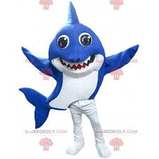

graham ground
graham ground is mascot for football team in north carolina state has sharp eyes and sharp teeth with blue and white colour animal shark
fun facts
- the shark mascot is intially scary but cute
- it supports and cheers for entire team
- they are fun and entertaining

link of index